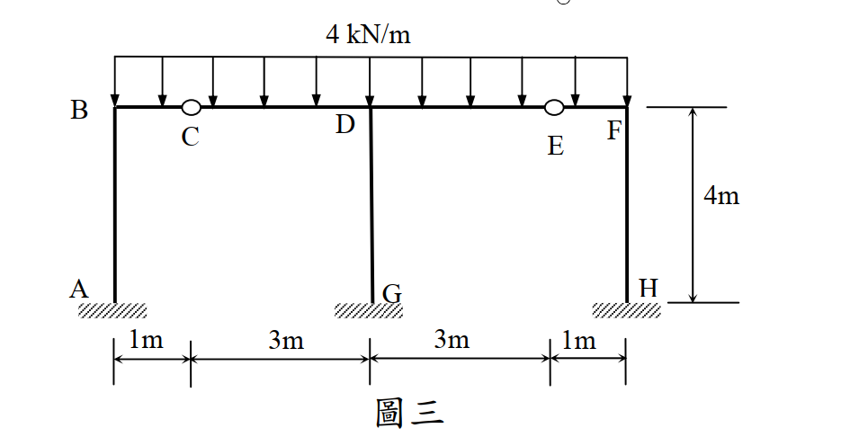
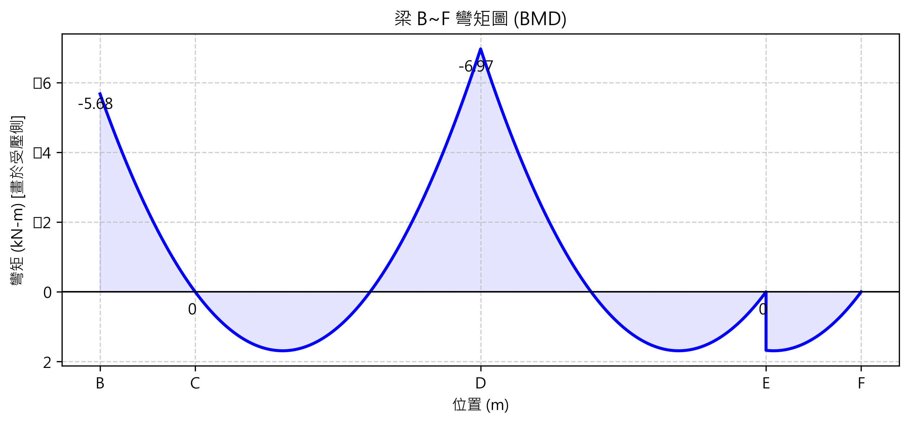

考題編號：SA-2015-3
主分類： SA-U2-3 靜不定結構之傾角變位法
副分類：
分析法： 傾角變位法 (Slope-deflection method)
標籤： 對稱剛架 傾角變位法 內部鉸 相對位移
1. 原始題目
圖三為一平面構架，點 A、G 及 H 為固定支承，點 C 及 E 為鉸接，此構架點 B 至 F 間梁桿件承受一垂直均佈載重 $4 \text{ kN/m}$。設所有桿件 EI 為定值，且忽略桿件軸向變形，試用傾角變位法，求各桿件端點彎矩及支承 G 之反力，並繪出 B 至 F 間梁桿件之彎矩圖。（25 分）

圖說：A、G、H為固定端柱底。AB=GD=HF=4m。上方梁B-C-D-E-F承受4kN/m均佈載重，其中C、E為內部鉸。BC=1m, CD=3m, DE=3m, EF=1m。
2. 核心考點
本題的核心在於處理對稱剛架中的內部鉸。利用對稱性可大幅減少未知數，但考生常犯的致命錯誤是「忽略內部鉸會產生垂直相對位移（下垂或上拱）」。必須引入鉸節點的垂直位移 $\delta$，並利用鉸接處的剪力平衡來建立方程式，才能得到正確解。
3. 解題戰略地圖
- 對稱性簡化：結構與載重均完全對稱於中心柱 GD。因此無側移 ($\Delta = 0$)，且中心節點 D 不旋轉 ($\theta_D = 0$)。
- 定義未知數：因 C、E 為鉸接，其彎矩為零，可採用修正傾角變位方程式消去 $\theta_C$。真正獨立的未知數僅剩 B 點轉角 $\theta_B$，以及鉸 C 的垂直變位量 $\delta$（進而產生弦轉角 $\psi$）。
- 建立節點方程式：
- B 點力矩平衡：$\sum M_B = 0 \Rightarrow M_{BA} + M_{BC} = 0$
- C 點剪力平衡（鉸點無外加集中力）：左側 BC 傳遞的剪力與右側 CD 傳遞的剪力必須達成靜力平衡。
- 解聯立方程式：解出 $\theta_B$ 與 $\delta$，代回求得所有桿端彎矩。
- 求解反力 G：計算梁 CD 與 DE 在 D 點的剪力反力，加總即為中心柱 GD 所承受的軸力（即 $G_y$）。
- 繪製 BMD：依據求得之端彎矩，疊加均佈載重之拋物線，繪製 B~F 之彎矩圖。
3.5 變數層次分析（Variable Hierarchy Analysis）
複習提示：第一次解題後，在每個卡住的知識點旁標記
⚠；第二次複習時只看有⚠的項目。
最終目標
求得 $\theta_B$ 與 $\delta$，進而計算所有桿端彎矩與 G 點反力。
本題關鍵公式（依計算順序）
$\boxed{\cdot}$ = 需由前步驟推導，非題目直接給定的變數
$$\text{Step 1: } M_{ij} = \frac{3EI}{L} (\theta_i - \psi) + FEM_{ij} \text{ (修正型方程式)}$$
$$\text{Step 2: } \sum M_B = 0 \Rightarrow \boxed{M_{BA}} + \boxed{M_{BC}} = 0$$
$$\text{Step 3: } \sum V_{C,up} = 0 \Rightarrow \boxed{V_{C, left}} + \boxed{V_{C, right}} = 0 \text{ (施加於鉸上的力量)}$$
$$\text{Step 4: 解聯立得 } \theta_B, \delta \Rightarrow \text{代回求 } M_{ij} \text{ 與 } G_y$$
L1：題目直接給定
| 符號 | 數值 | 說明 |
|---|---|---|
| $w$ | $4 \text{ kN/m}$ | 梁 B~F 的均佈載重 |
| $L_{AB}$ | $4 \text{ m}$ | 左側柱高 |
| $L_{BC}$ | $1 \text{ m}$ | 左外側梁長 |
| $L_{CD}$ | $3 \text{ m}$ | 左內側梁長 |
L2：需知識點推導
Step 1：固端彎矩 (FEM) 與弦轉角 ($\psi$)
| 符號 | 公式/來源 | 卡關? |
|---|---|---|
| $FEM_{BC}$ | $-\frac{w L_{BC}^2}{8} = -0.5$ | B固定C鉸接之固端彎矩 (逆時針為負) |
| $FEM_{DC}$ | $+\frac{w L_{CD}^2}{8} = +4.5$ | D固定C鉸接之固端彎矩 (順時針為正) |
| $\psi_{BC}$ | $\delta / 1 = \delta$ | C 點下陷 $\delta$，弦轉動為順時針(正) |
| $\psi_{CD}$ | $-\delta / 3$ | C 點下陷 $\delta$，弦轉動為逆時針(負) |
Step 2 & 3：彎矩與剪力表示式
| 符號 | 公式/來源 | 卡關? |
|---|---|---|
| $M_{BC}$ | $3EI(\theta_B - \delta) - 0.5$ | 代入修正傾角方程式 |
| $M_{DC}$ | $EI(\delta/3) + 4.5$ | 代入修正傾角方程式 ($\theta_D=0$) |
| $V_{C,left}$ | $M_{BC} + 2$ | 取 BC 段對 B 取力矩求得 (鉸施於左側梁之向上力) |
| $V_{C,right}$ | $6 - M_{DC}/3$ | 取 CD 段對 D 取力矩求得 (鉸施於右側梁之向上力) |
L3：深層知識（不懂就卡住）
| 知識點 | 說明 | 卡關? |
|---|---|---|
| 對稱性無側移 | 結構幾何與載重皆完全對稱於 GD 柱，故無側移 ($\Delta_x = 0$)，中心點 D 不旋轉 ($\theta_D = 0$)。 | |
| 內部鉸的垂直位移 | 內部鉸 C 缺乏垂直支承，必然產生垂直位移 $\delta$，進而引發相鄰桿件的弦轉角 $\psi \neq 0$。這是本題最常掉入的陷阱。 |
4. 步驟化詳細計算過程
步驟 1：建立傾角變位方程式
設順時針轉角與彎矩為正。C 點下陷量為 $\delta$ (向下為正)。
-
AB 柱 ($\theta_A = 0, \Delta = 0$):
$M_{AB} = \frac{2EI}{4}(\theta_B) = 0.5 EI \theta_B$
$M_{BA} = \frac{2EI}{4}(2\theta_B) = EI \theta_B$ -
BC 梁 ($\theta_C$ 為鉸, 修正型):
$\psi_{BC} = \frac{\delta - 0}{1} = \delta$
$M_{BC} = \frac{3EI}{1}(\theta_B - \psi_{BC}) + FEM_{BC} = 3EI(\theta_B - \delta) - 0.5$ -
CD 梁 ($\theta_D = 0, \theta_C$ 為鉸, 修正型):
$\psi_{CD} = \frac{0 - \delta}{3} = -\frac{\delta}{3}$
$M_{DC} = \frac{3EI}{3}(\theta_D - \psi_{CD}) + FEM_{DC} = EI\left(\frac{\delta}{3}\right) + 4.5$
步驟 2：節點 B 彎矩平衡方程式
$$ \sum M_B = 0 \Rightarrow M_{BA} + M_{BC} = 0 $$
$$ EI\theta_B + 3EI\theta_B - 3EI\delta - 0.5 = 0 $$
$$ 4EI\theta_B - 3EI\delta = 0.5 \quad \text{--- (式 1)} $$
步驟 3：內部鉸 C 剪力平衡方程式
C 為內部鉸，其左右兩側傳遞之剪力必須平衡（即 C 點無不平衡外加集中力）。
-
分析 BC 段 (取對 B 力矩)：
設 $V_{C, left}$ 為內部鉸對 BC 段施加的向上力。
$$ \sum M_B = 0 \Rightarrow V_{C, left} \times 1 - M_{BC} \text{ (順時針)} - 4 \times 1 \times 0.5 = 0 $$
$$ \Rightarrow V_{C, left} = M_{BC} + 2 \text{ (向上)} $$ -
分析 CD 段 (取對 D 力矩)：
設 $V_{C, right}$ 為內部鉸對 CD 段施加的向上力。
$$ \sum M_D = 0 \Rightarrow V_{C, right} \times 3 - M_{DC} \text{ (順時針)} - 4 \times 3 \times 1.5 = 0 $$
$$ \Rightarrow V_{C, right} = 6 - \frac{M_{DC}}{3} \text{ (向上)} $$ -
鉸接點本身平衡：
梁施於鉸的力必須抵消，亦即鉸對左梁的向上力與鉸對右梁的向上力總和為零：
$$ V_{C, left} + V_{C, right} = 0 \Rightarrow (M_{BC} + 2) + \left(6 - \frac{M_{DC}}{3}\right) = 0 $$
$$ M_{BC} - \frac{M_{DC}}{3} = -8 $$
代入傾角方程式：
$$ (3EI\theta_B - 3EI\delta - 0.5) - \left( \frac{EI\delta}{9} + 1.5 \right) = -8 $$
$$ 3EI\theta_B - \frac{28}{9}EI\delta = -6 \quad \text{--- (式 2)} $$
步驟 4：解聯立方程式與求彎矩
由式 1 得：$EI\delta = \frac{4}{3}EI\theta_B - \frac{1}{6}$
代入式 2：
$$ 3EI\theta_B - \frac{28}{9}\left(\frac{4}{3}EI\theta_B - \frac{1}{6}\right) = -6 $$
$$ \left(3 - \frac{112}{27}\right)EI\theta_B = -6 - \frac{14}{27} $$
$$ -\frac{31}{27}EI\theta_B = -\frac{176}{27} \Rightarrow \mathbf{EI\theta_B = \frac{176}{31} \approx 5.677} $$
回代求 $\delta$：
$$ EI\delta = \frac{4}{3}\left(\frac{176}{31}\right) - \frac{1}{6} = \frac{704}{93} - \frac{1}{6} = \mathbf{\frac{459}{62} \approx 7.403} \text{ (正值表 C 點確實下陷)} $$
計算左半部桿端彎矩：
- $M_{AB} = 0.5 \times \frac{176}{31} = \mathbf{\frac{88}{31} \approx 2.84 \text{ kN-m (順)}}$
- $M_{BA} = 1.0 \times \frac{176}{31} = \mathbf{\frac{176}{31} \approx 5.68 \text{ kN-m (順)}}$
- $M_{BC} = 3\left(\frac{176}{31}\right) - 3\left(\frac{459}{62}\right) - 0.5 = \mathbf{-\frac{176}{31} \approx -5.68 \text{ kN-m (逆)}}$
- $M_{DC} = \frac{1}{3}\left(\frac{459}{62}\right) + 4.5 = \mathbf{\frac{216}{31} \approx 6.97 \text{ kN-m (順)}}$
由對稱性直接寫出右半部彎矩：
- $M_{FE} = \mathbf{\frac{176}{31} \text{ kN-m (順)}}$
- $M_{FH} = \mathbf{-\frac{176}{31} \text{ (逆)}}$
- $M_{HF} = \mathbf{-\frac{88}{31} \text{ (逆)}}$
- $M_{DE} = \mathbf{-\frac{216}{31} \text{ kN-m (逆)}}$
- 中心柱因 $\theta_D = 0, \Delta = 0$ 且無載重，故 $M_{GD} = M_{DG} = \mathbf{0}$
- 鉸接點 $M_{CB} = M_{CD} = M_{ED} = M_{EF} = \mathbf{0}$
步驟 5：求 G 點反力
中心柱 GD 沒有彎矩與水平剪力，故 $G_x = 0, M_G = 0$。
垂直反力 $G_y$ 來自 D 點左右兩側梁傳遞的剪力：
-
CD 段 D 點剪力 ($V_D$)：
對 C 取力矩：$V_D \times 3 - M_{DC} - 12 \times 1.5 = 0 \Rightarrow V_D = 6 + \frac{216/31}{3} = \frac{258}{31} \text{ kN (向上)}$ -
總反力：
對稱結構下，右半側 DE 段亦貢獻 $\frac{258}{31} \text{ kN}$ 壓於中心柱上。
$$ G_y = 2 \times \frac{258}{31} = \mathbf{\frac{516}{31} \text{ kN} \approx 16.65 \text{ kN (向上)}} $$
步驟 6：繪製彎矩圖 (BMD)
根據算出的桿端彎矩以及 4 kN/m 的均佈載重，疊加各段拋物線。

圖說：上方梁 B-C-D-E-F 的彎矩圖 (BMD)。於 B 點內彎矩為 -5.68 (上方受拉)，在鉸 C 點彎矩歸零，至 D 點達 -6.97 (上方受拉)。全段受 4 kN/m 均佈載重呈拋物線變化。
5. 關鍵爭議點與進階探討
為什麼必須考慮 $\delta \neq 0$？
初學者看到對稱與無側移 ($\Delta_x = 0$)，常誤以為內部所有節點的相對位移都是 0。但內部鉸 (Internal Hinge) 打破了梁的連續性，且底下沒有柱子支撐，這意味著它就像吊橋的中間節點一樣，在重力作用下必然產生下陷。如果不考慮 $\delta$，即預設 $\psi = 0$，算出來的 $V_{C, left}$ 與 $V_{C, right}$ 絕對不會平衡，會導致整個結構的自由體圖不滿足靜力平衡法則。這正是本題的核心考驗。